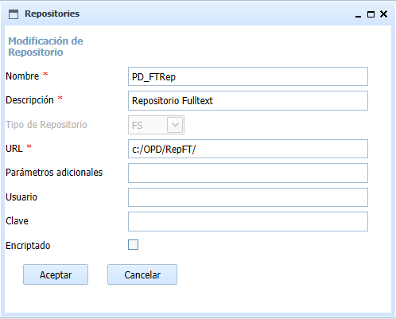
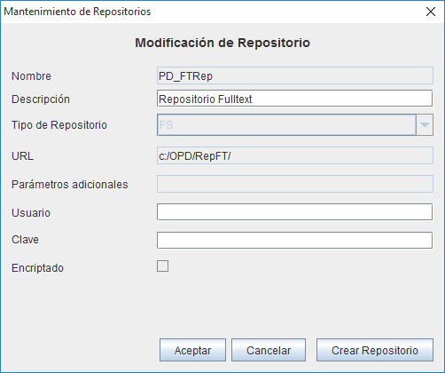
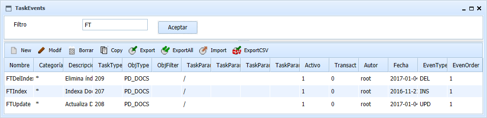
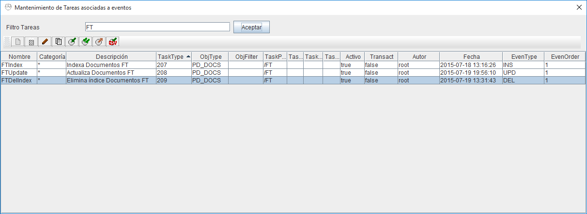

La búsqueda por texto completo permite poder localizar los documentos por su contenido además de sus metadatos u otros criterios. Esto se consigue por medio las librerías de Apache Tika, que extrae el contenido de los documentos en forma de texto y Lucene, que indexa esos textos. Los índices se almacenan en una carpeta del disco (para lo que debe crearse un repositorio) y se actualizan cuando se añaden, modifican o borran documentos (para lo cual deben crearse tareas).
Para buscar documentos por texto completo debe crearse un repositorio (Mantenimiento de repositorios) con el nombre reservado "PD_FTRep", de tipo filesystem (FS) y cuya URL será una carpeta o sistema de archivos accesible por los equipos que indexarán y realizarán la búsqueda (Ej."/prodoc/Ft_Index/"). No es necesario parámetros adicionales. Es importante asegurarse de que el usuario(s) con que se realiza la indexación debe tener permisos completos de escritura y borrado sobre la carpeta. En ocasiones en Linux de ha observado que hay problemas de indexación que se resuleven asignando los permisos 777. Si se utiliza conexión remota o cliente Web unicamente, los servidores J2EE donde esté instalada la aplicación Prodoc.war deberán tener visibilidad de esas carpetas.


A continuación, debe crearse tareas asociadas a eventos (Mantenimiento de tareas asociadas a eventos) para actualizar los índices. Debe crearse una tarea asociada a cada tipo de operación (Alta, Baja y Modificación) de forma cada vez que un documento se cree o actualice o borre, se genere una petición de actualización de los índices de texto completo.


La forma más sencilla, que indexará todos los documentos del repositorio, es elegir como tipo documental al que aplicar el evento el tipo base "PD_DOCS" y como carpeta a filtrar la carpeta raiz "/". De esta forma se indexaran todos los documentos de tipo PD_DOCS y todos sus subtipos (es decir todos) y además se aplicará a los documentos almacenados por debajo de la carpeta raiz y todas las subcarpetas.
Si por motivos de rendimiento o exceso de información se deseara limitar a una serie de tipos documentales, podría elegirse el tipo documental padre común a todos ellos o bien crear varias ternas (Alta, Baja, Modificacion) de tareas, una por cada tipo documental a indexar. Similarmente, podría filtrarse por estructuras de carpetas, de forma que solo se indexe por ejemplo una estructura "/Expedientes" y no una estructura "/Información Privada". Como en el caso de los tipos, puede tomarse como parámetro la carpeta padre común a varias o bien crearse una terna por cada carpeta.
La información a incluir en cada tarea es la siguiente:
Las tareas definidas se ejecutarán de acuerdo a la programación y carga de trabajo, por lo que generalmente los documentos no estarán accesibles bara búsqueda por texto libre nada mas ser insertados o actualizados.
La búsqueda se realizará desde la pantalla de búsqueda habitual (Búsqueda de documentos). Los criterios habituales pueden combinarse con la introducción de palabras. Los operadores disponibles son:
En la búsqueda por texto completo, a partir de la versión 2.3 de OpenProdoc se ha introducido algunas mejoras, como la posibilidad de elegir el idioma o poder definir un diccionario de palabras vacías, dos medidas que mejoran la tanto calidad de los resultados de las búsquedas como el rendimiento.
Al elegir un idioma, se activa el stemming adecuado para ese idioma, es decir la conversión de las palabras a su “raíz” antes de indexarse. De esa forma cuando se busca, es indiferente introducir “Documento” o “Documentos”. Lógicamente las reglas del stemming son diferentes por idioma (por ejemplo en inglés se eliminará el sufijo “ing” de los gerundios). Por ello debe elegirse el idioma adecuado al de los documentos a buscar. Si los documentos pueden ser de varios idiomas, es posible mantenerse el idioma sin especificar. Generalmente no conviene utilizar un idioma diferente al de los documentos ya que la aplicación de reglas diseñadas para otro idioma puede provocar que la calidad de los resultados baje en lugar de aumentar.
Respecto al diccionario de palabras vacías, incluye las palabras que no son significativas para una búsqueda, bien porque son partículas “sin significado” (artículos, preposiciones, pronombres,..) o bien porque aparecerán en casi todos los documentos (por ejemplo la palabra “ecología” en documentación de una organización ecologista) y por tanto la búsqueda por esos términos devolverá casi todos los documentos, lo que no aporta ningún valor. La inclusión de palabras en el diccionario de palabras vacías, por una parte ahorra espacio en los ficheros de índices de búsqueda por texto completo y aporta más velocidad de búsqueda y de indexación, y por otra parte facilita la búsqueda, ya que se ignoran sus apariciones y se centra en los términos significativos. Por ejemplo podrá encontrarse mejor documentos donde aparece “los vertidos contaminantes en el rio” y “se ha vertido algún contaminante en el margen derecho del rio” si son palabras vacías: “los, en, el, se, ha, del, margen, derecho”, ya que los términos asociados al documento serán: vertido, contaminante, rio (donde además se ha utilizado el stemming para quitar plurales).
Para elegir el idioma o la lista de palabras vacías, debe seguirse el siguiente procedimiento: